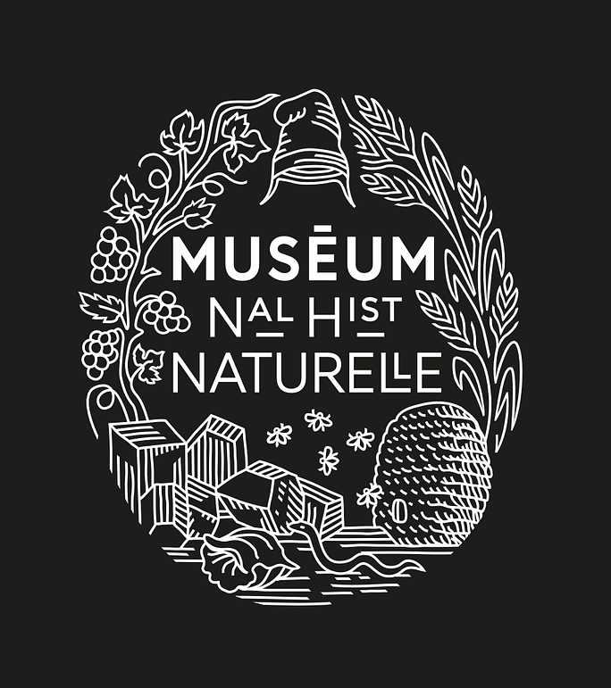
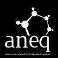
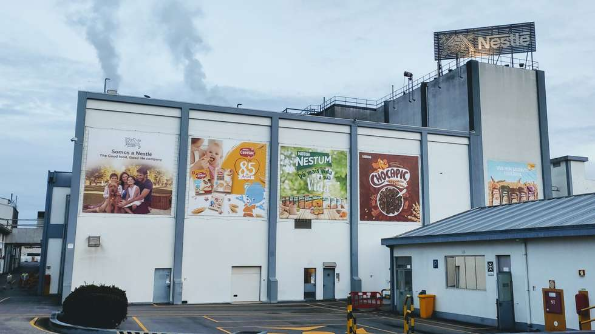

Visiting Scientist

Visiting Scientist

Invited Assistant (University Teacher)

President of the Fiscal Council
Vice President
Vice-President — UBIQUÍMICA
Research Intern
Delegate of Industrial Chemistry Students (Pedagogical Council)

Factory Worker
Member of the Scientific Committee — UBIQUÍMICA
Professional Internship